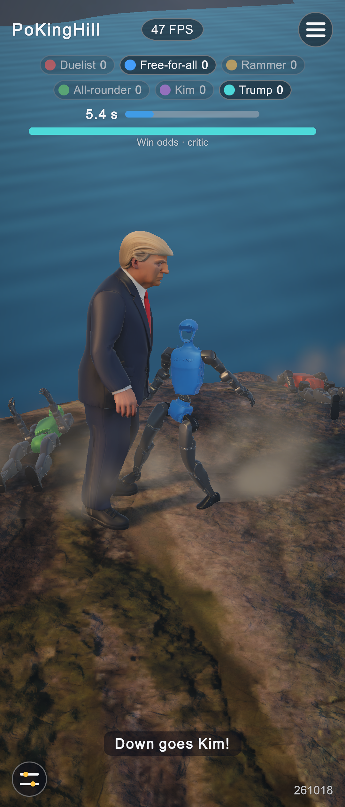
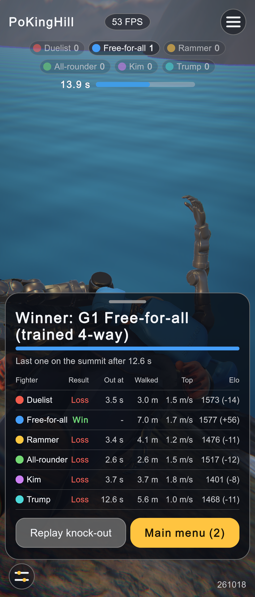
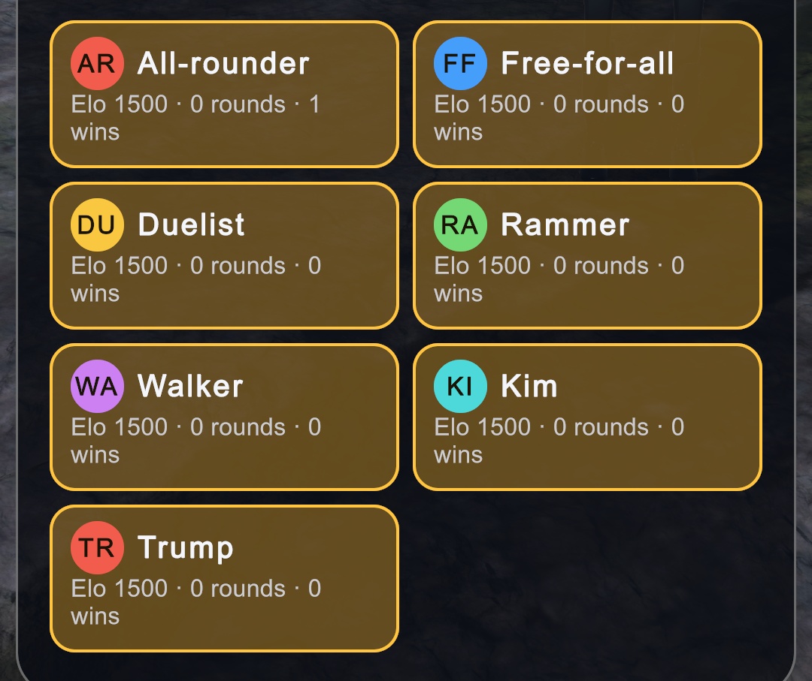
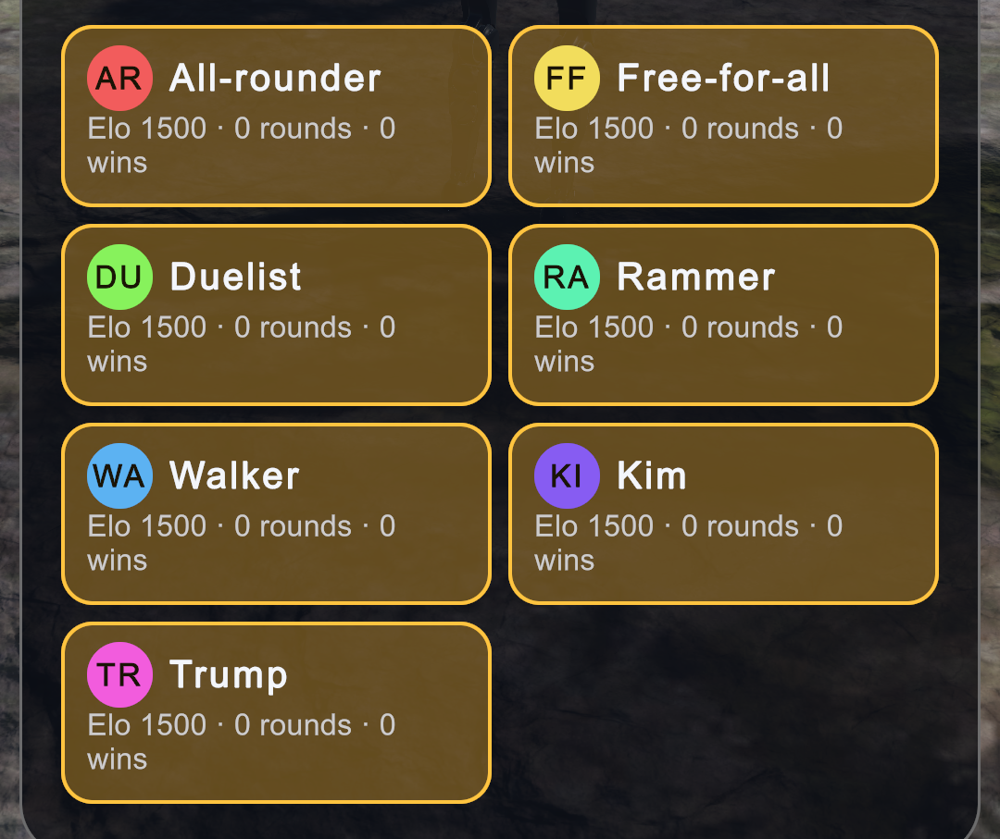
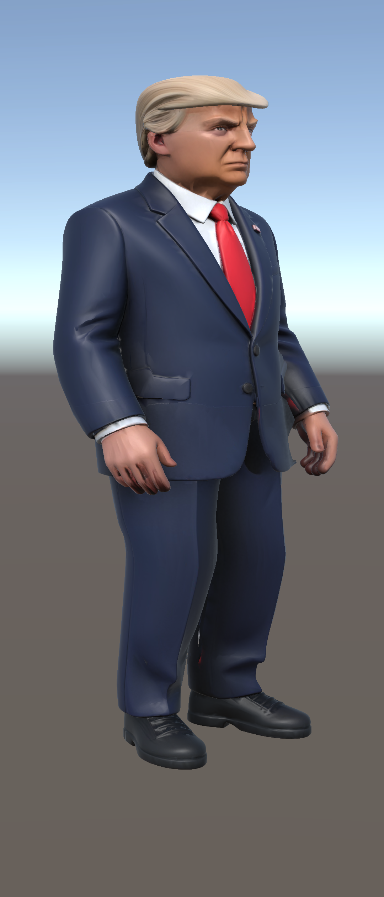
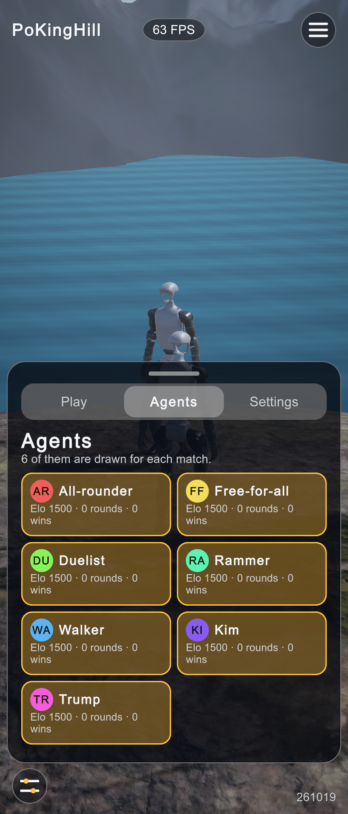

Sixth fighter in the HUD
Trump joins as a third body kind (261018–261019): six fighters on the summit, seven agents in the menu. Before = the five-fighter game from day 2.
1. Scoreboard, win odds and round: six fighters
A sixth seat colour (cyan) in DemoDirector.SeatColors; the scoreboard wraps to two rows of three, the win-odds bar gets a sixth segment, and the caption names the human fighters.


2. Results sheet: six rows
No layout change was needed: the 64 px rows fit six fighters above the buttons on a 9:16 screen.


3. Agents tab: seven avatars, no repeated colour
Avatars took SeatColors[i % 6], so the seventh agent (Trump) repeated the All-rounder's red. With more agents than seat colours the avatars now take evenly spaced hues (HudView).


4. Trump's mesh on his physics body
The rigged GLB follows the MuJoCo bodies through SkinFollower, scaled to 1.90 m; rest pose matches the physics zero pose within 0.1 mm.

